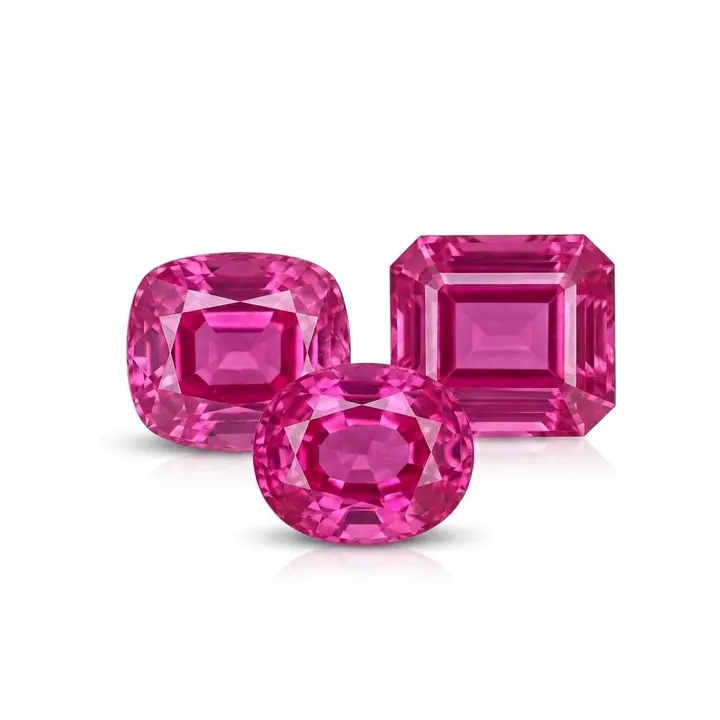

金紅石針與絲狀物：紅寶石體內的定時指紋
紅寶石體內的細小金紅石針，是地質的時鐘、產地的指紋，也是星光寶石的靈魂。

核心定義
金紅石針（rutile needles）是紅寶石與藍寶石中最具代表性的內含物之一：細如髮絲的二氧化鈦（TiO₂）針晶，常沿剛玉六方晶系的三個方向定向排列，交織成「絲絨」（silk）般的質感。
這些針不是瑕疵——它們是寶石的「年輪」與「指紋」：記錄著結晶時的溫度與成分，決定星光效應的有無，影響顏色的濃淡，還是鑑定師判斷產地與「燒沒燒」的關鍵線索。
特徵與分類
| 針狀物表現 | 意義 | 鑑定應用 |
|---|---|---|
| 細密定向絲絨 | 典型天然特徵 | 判斷天然/產地 |
| 針晶斷裂、熔融 | 加熱證據 | 判斷是否燒過 |
| 三向排列 | 星光效應基礎 | 星光寶石價值 |
| 針太密太濁 | 顏色變淡/變濁 | 品質扣分 |
當金紅石針細密均勻時，光線被散射，形成絲絨般的柔光——緬甸紅寶的「絲絨感」與喀什米爾藍寶的「絨光」都與此有關；當針排列完美時，弧面切磨會浮現六道星光。但針太多太粗，寶石會發濁、顏色變淡，反而扣分。
科學原理
金紅石針的形成是「固溶體出溶」：剛玉在高溫結晶時溶解了過量二氧化鈦，冷卻降溫後，鈦以針狀金紅石的形式「析出」沉澱——就像糖水冷卻結晶一樣。針的長短疏密，記錄了冷卻速度與鈦含量。
加熱對針的影響是鑑定關鍵：高溫加熱（約 1300°C 以上）會讓金紅石針溶解進晶格——「絲絨消失」是加熱過的強烈訊號；部分加熱寶石可見針的斷裂或熔融殘影。鑑定師靠針的狀態判斷「燒沒燒」。
鑑定與鑑別方法
- 顯微鏡找三向排列的金紅石針（天然特徵）
- 看針的狀態：完整細密＝可能無燒；斷裂熔融＝加熱跡象
- 針太多太粗：顏色發濁，品質打折
- 針與星光：弧面寶石針定向好則有星光
- 區分合成：焰熔法合成剛玉少見天然針狀絲絨
市場行情與保養建議
市場上，「絲絨感」是高品質緬甸紅寶與喀什米爾藍寶的加分敘事，但「針太多」同樣會讓寶石發濁降價——適量的絲絨是美，過量的絲絨是缺陷，平衡是關鍵。
對收藏家，含美觀針狀內含物的寶石有「個性」與「產地證據」雙重價值；但最終價格仍由顏色、克拉與證書決定。
常見誤區
對紅藍寶而言，特定的針狀絲絨內含物是天然證明與美學加分——緬甸紅寶與星光藍寶的價值，恰恰來自這些「內含物」。鑑定內含物要看種類與位置，不能一概而論。
不可能。星光需要密集定向針狀內含物，淨度寶石要求乾淨——兩者是地質上的矛盾體。想要星光，就要接受絲絨。
冷知識
針完整＝可能沒燒；針斷裂熔融＝進過高溫窯。紅寶石有沒有被加熱，鑑定師從針的狀態就能讀出大半。
三向排列的金紅石針，把光沿三個垂直方向反射——六道星芒，是數百萬根針的集體作業。
反直覺觀點
同一種金紅石針：在刻面淨度寶石裡是減分內含物，在弧面星光寶石裡是價值核心。材質不變，變的是切磨與美學體系。
針散射光線成就星光，卻也讓體色變淺變濁。頂級星光寶石在「星光」與「顏色」之間找平衡——兩全其美是極少數地質奇蹟。